Research
Wave Acceleration and NH Jump in Nonreciprocal Lattices
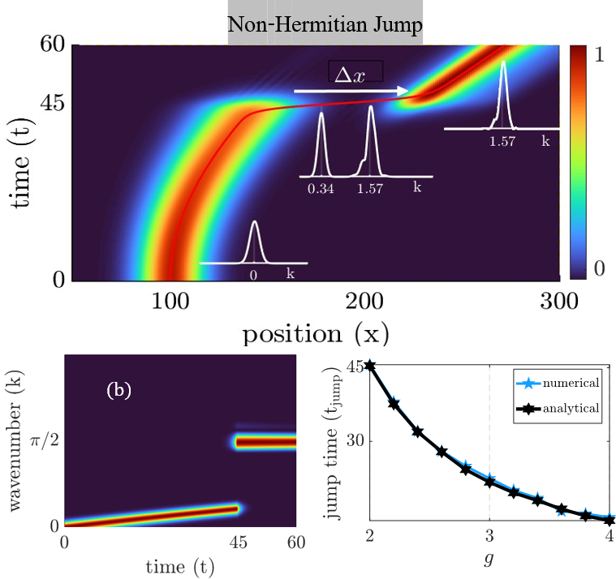
The time evolution of initially localized wavepackets in the discrete Hatano-Nelson lattice displays a rich dynamical structure shaped by the interplay between dispersion and nonreciprocity. Our analysis reveals a characteristic evolution of the wave-packet center of mass, which undergoes an initial acceleration, subsequently slows down, and ultimately enters a regime of uniform motion, accompanied throughout by exponential amplification of the wave-packet amplitude. To capture this behavior, we develop a continuum approximation that incorporates higher-order dispersive and nonreciprocal effects and provides accurate analytical predictions across all relevant time scales. We then demonstrate the existence of a non-Hermiticity-induced jump - an abrupt spatial shift of the wave-packet center even in the absence of disorder - and derive its underlying analytical foundation. The analytical predictions are in excellent agreement with direct numerical simulations of the Hatano-Nelson chain. Our results elucidate the interplay between dispersion and nonreciprocity in generating unconventional transport phenomena, and pave the way for controlling wave dynamics in nonreciprocal and non-Hermitian metamaterials. Read more
Fast wave transport in two-dimensional PT-symmetric lattices
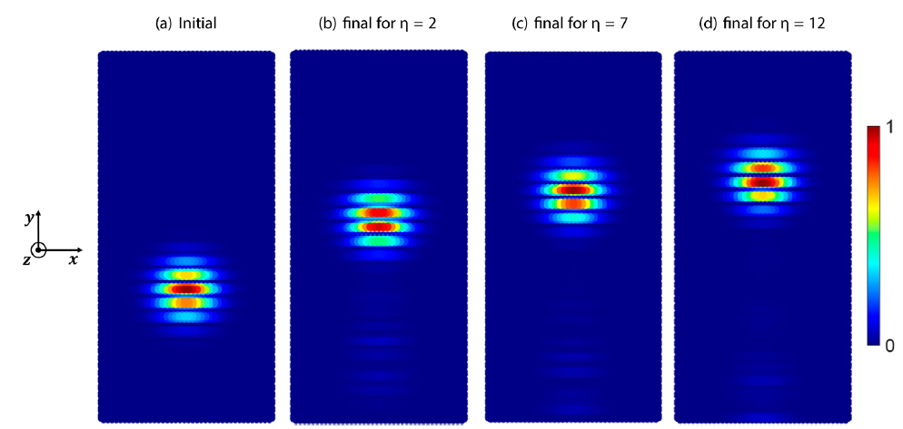
We present a theoretical investigation of wave dynamics in two-dimensional non-Hermitian PT-symmetric lattices, where onsite, as well as inter-site control couplings are employed. Our analysis shows that these couplings can be tuned to achieve a direction-sensitive group velocity enhancement beyond what is possible in the uncontrolled (Hermitian) counterpart, while ensuring that the wave packet evolution remains bounded and dynamically stable. We derive a dedicated relation between the control parameters, providing a systematic condition under which stability is guaranteed. We then study the topological properties of the non-Hermitian system at hand and use an experimental-ready topoelecric metamaterial platform to demonstrate the non-Hermitian couplings realization and the resulting wave dynamics. This framework paves the way to designing stable and fast wave transport in planar non-Hermitian media. Read more.
Supersonic wave propagation in active non-Hermitian acoustic metamaterials
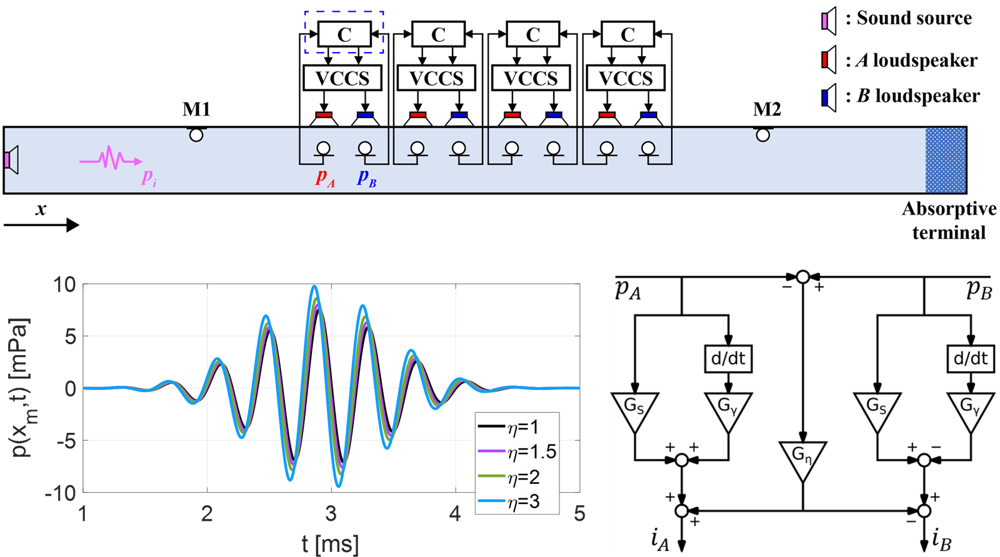
Obtaining a group velocity higher than the speed of sound in a waveguide is a challenging task in acoustic wave engineering. Even more challenging is to achieve this velocity increase without any intervention with the waveguide profile, such as narrowing or widening, and particularly without interfering with the passage by flexible inclusions, either passive or active. Here, we approach this problem by invoking concepts from non- Hermitian physics, and imposing them using active elements that are smoothly sealed within the waveguide wall. In a real-time feedback operation, the elements induce local pressure gain and loss, as well as non-local pressure integration couplings.
We employ a dedicated balancing between the control parameters, derived from lattice theory and adjusted to the waveguide system, to drive the dynamics into a stable parity-time-symmetric regime. We demonstrate the accelerated propagation of a wave packet both numerically and experimentally in an air-filled waveguide and discuss the trade-off between stabilization and the achievable velocity increase. Our work prepares the grounds for advanced forms of wave transmission in continuous media, enabled by short and long range active couplings, created via embedded real-time feedback control. Read more.
Harnessing Nonlinearity to Tame Wave Dynamics in Nonreciprocal Active Systems
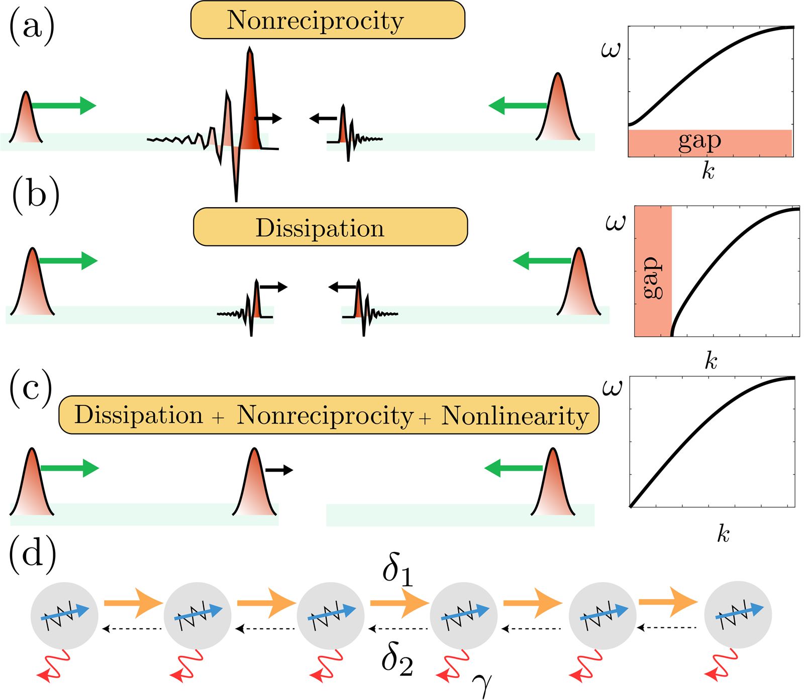
We present a mechanism to generate unidirectional pulse-shaped propagating waves, tamed to exponential growth and dispersion, in active systems with nonreciprocal and nonlinear couplings. In particular, when all bulk modes are exponentially localized at one side of the lattice (skin effect), it is expected that wave dynamics is governed by amplification or decay until reaching the boundaries, even in the presence of dissipation. Our analytical results, and experimental demonstrations in an active electrical transmission line metamaterial, reveal that nonlinearity is a crucial tuning parameter in mediating a delicate interplay between nonreciprocity, dispersion, and dissipation. Consequently, undistorted unidirectional solitonic pulses are supported both for low and high nonreciprocity and pulse amplitude strength. The proposed mechanism facilitates robust pulse propagation in signal processing and energy transmission applications. Read more.
Controlled wave acceleration in non-Hermitian lattices
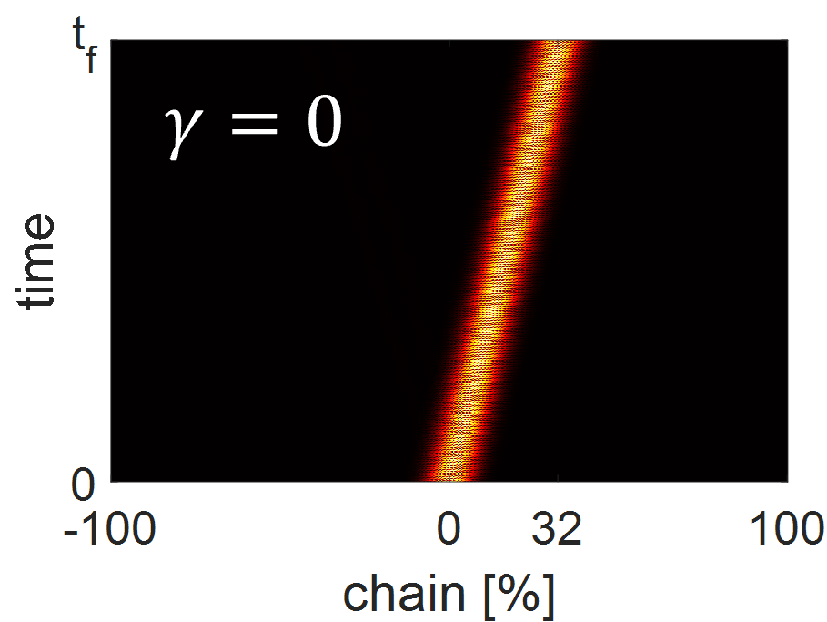
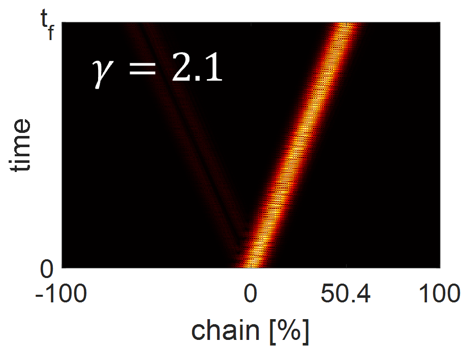
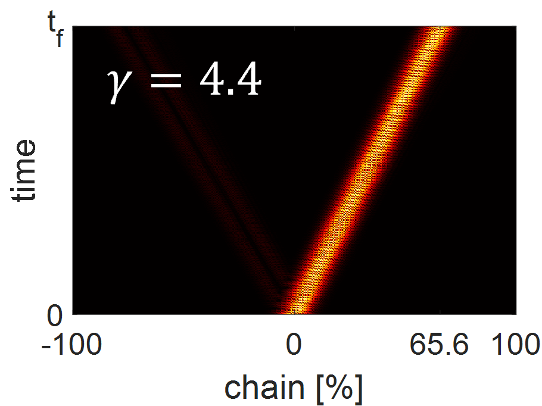
We report the propagation of fast and stable wave packets in classical non-Hermitian lattices, where the group velocity is controlled by the non-Hermiticity parameters, and can exceed that of the Hermitian counterpart. Specifically, we design a 𝒫𝒯-symmetric system that supports a constant group velocity increase, and which evolves into a nonconstant increase, i.e., an acceleration, when we induce spatial inhomogeneity. A dedicated relation between the control parameters keeps the lattice system dynamically stable for the achieved velocities. As a result, wave packets are propagating along the lattice with a nongrowing amplitude. We demonstrate the system experimentally in a topoelectrical metamaterial, where the non-Hermiticity is generated by embedded operational amplifiers in a feedback setup. Our design paves the way to new forms of fast and stable signal transmission, which can be directly controlled on demand. Read more.
Invisible tunneling through non-Hermitian barriers in nonreciprocal lattices
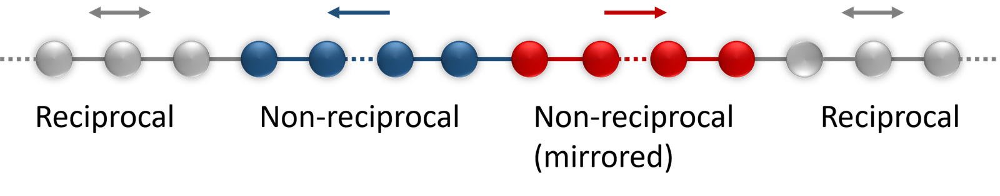
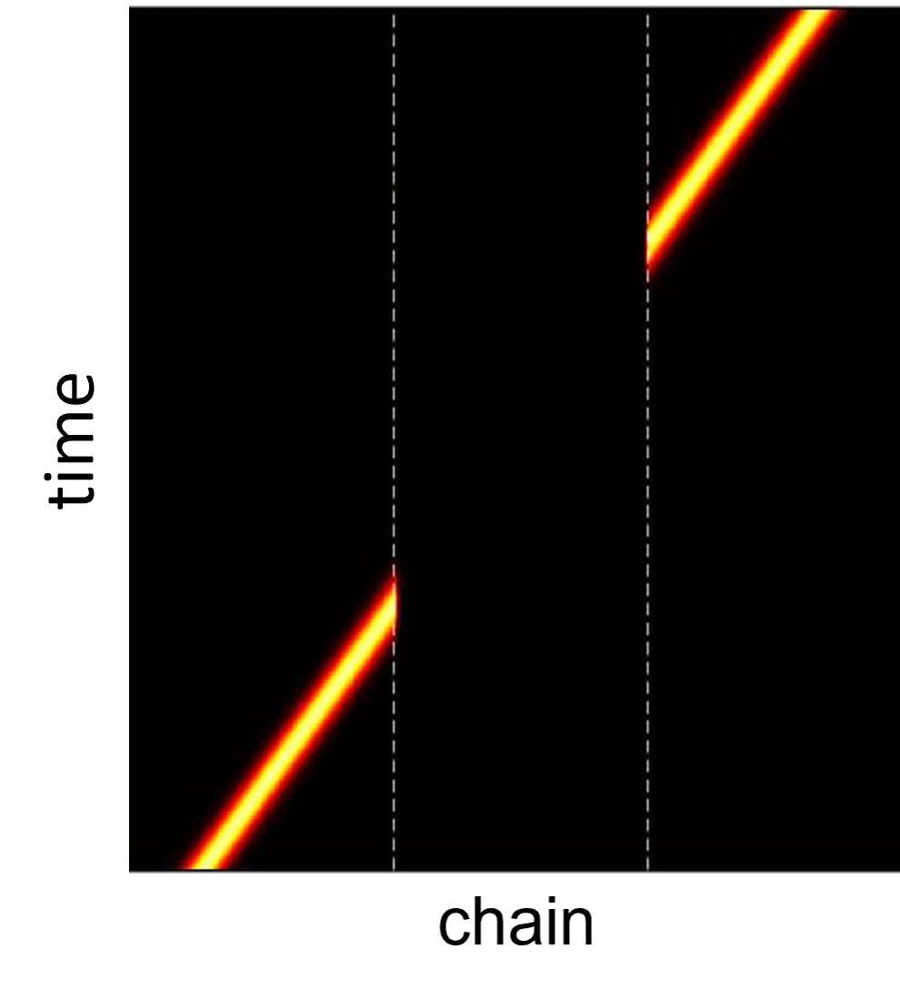
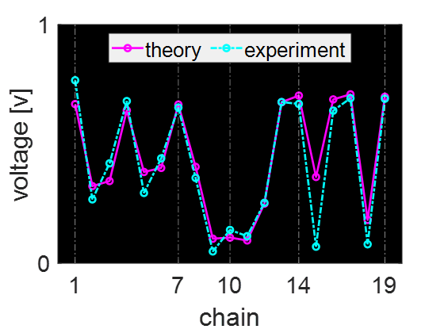
We report a peculiar tunneling phenomenon that occurs in lattices with nonreciprocal inter-site couplings. The nonreciprocity holds for an inner portion of the lattice, constituting a non-Hermitian interface between outer Hermitian sections. The couplings are mirrored about the interface center, with the smaller strength directed outwards. As a standalone system that was widely studied in recent years, each section of the interface supports the non-Hermitian skin effect, in which modes are accumulated at the boundary of the weaker coupling. Here, we investigate what happens to a wave that propagates along the lattice and hits the interface.
The skin mode accumulation, which effectively constitutes a barrier, forbids wave penetration into the interface, but surprisingly, under certain conditions the wave is transmitted to the other side, keeping the interface dark, as if the wave invisibly tunneled through it. Remarkably, the tunneling is independent of the interface length. We derive the phenomenon both for quantum and classical systems, and realize it experimentally in an active topoelectric metamaterial. Our study fosters the research of wave tunneling through other types of NH interfaces, which may also include nonlinearities, time-dependence and more. Read more.
Gravitational lensing and tunneling of mechanical waves in synthetic curved spacetime
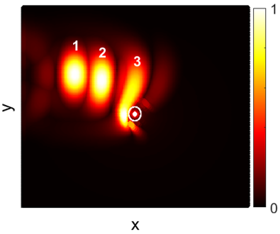
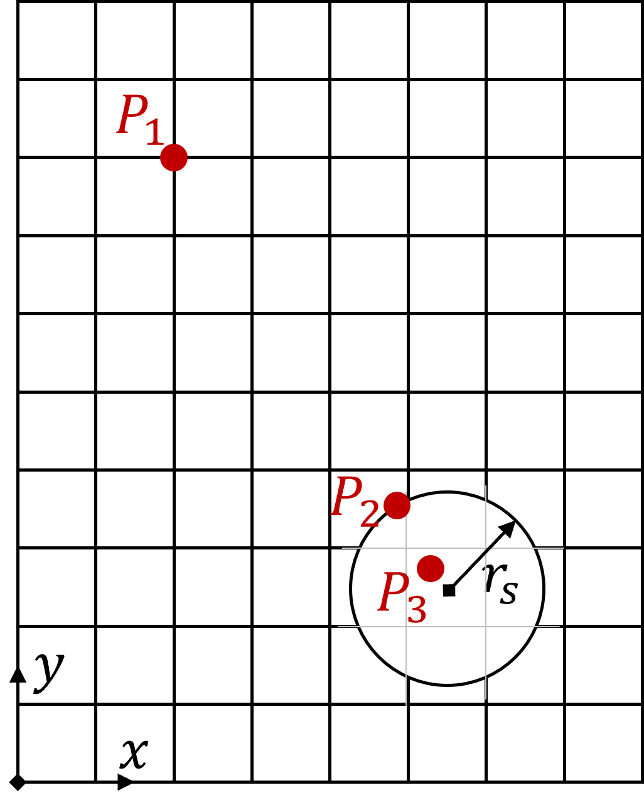
Black holes are considered among the most fascinating objects that exist in our universe, since in the classical formalism nothing, even no light, can escape from their vicinity due to gravity. The gravitational potential causes the light to bend towards the hole, which is known by gravitational lensing. Here we present a synthetic realization of this phenomenon in a lab-scale 2D network of mechanical circuits, based on analogous condensed matter formalism of Weyl semimetals with inhomogeneous nodal tilt profiles. Some of the underlying network couplings turn out as unstable and non-reciprocal, and are implemented by embedded active feedback interactions in an overall stabilized structure. We demonstrate the lensing by propagating mechanical wavepackets through the network with a programmed funnel-like potential, achieving wave bending towards the circle center. We then demonstrate the versatility of our platform by reprogramming it to mimic quantum tunneling of particles through the event horizon, known by Hawking radiation, achieving an exceptional correspondence to the original mass loss rate within the hole. The network couplings and the potential can be further reprogrammed to realize other curvatures and associated relativistic phenomena. Read more
Emerging exceptional point with breakdown of the skin effect in non-Hermitian quantum systems
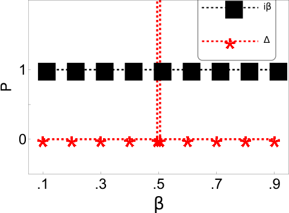
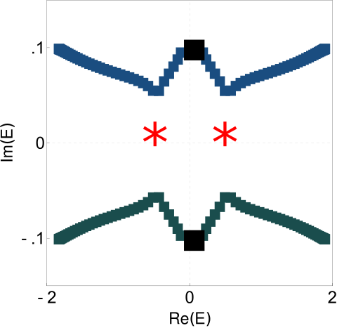
We study the interplay of two distinct non-Hermitian parameters: directional coupling and onsite gain-loss, together with topology, in coupled 1D non-Hermitian Su-Schrieffer-Heeger (SSH) chains. The SSH model represents one of the simplest two-band models that features boundary localized topological modes. Our study shows how the hybridization between two topological modes can lead to a striking spectral feature of non-Hermitian systems, namely exceptional point (EP). We reveal the existence EP as a singularity in the parameter space of non-Hermitian couplings carrying a half-integer topological charge. We also demonstrate two different localization behaviors observed in the bulk and hybridized modes. While the bulk states and individual topological modes remain localized at the boundaries due to skin effect, the competition between the constituent non-Hermitian parameters can overcome the strength of skin effect and lead to the complete delocalization of these hybridized modes. We obtain explicit analytic solutions for the eigenfunctions and the eigenenergies of the hybridized modes, which exactly match the numerical results and successfully reveal the underlying cause of delocalization and the emergence of EP. Read more
Active control approach to temporal acoustic cloaking
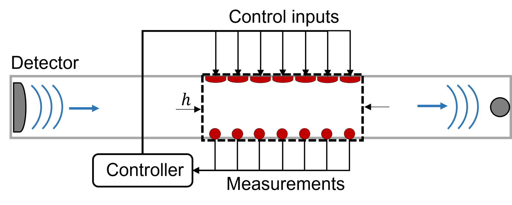
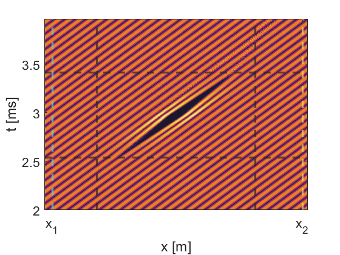
We propose a realization of a transformation-based acoustic temporal cloak using an active closed-loop control approach to an equivalent electromagnetic problem. Unlike the more common spatial cloaks the goal of which is hiding fixed objects from detection, the goal of the temporal cloak is hiding the occurrence of events during a finite period of time. In electromagnetic systems, in which events represent, for example, leakage of signals from transmission lines or optical fibers, temporal cloaking solutions usually rely on nonlinear phenomena related to the fibers properties, or on modulating the properties of the propagation medium itself. In particular, the transformation-based solution requires modulating the constitutive parameters of the medium both in space and time. Our control approach is fully linear, where the required change in the medium parameters is programmed into the controllers and created by external actuators in real-time. This cloaking system keeps the physical medium unchanged, and enables to reprogram the cloaking parameters upon request. We demonstrate our solution in a simulation of a one-dimensional water channel. Read more
Real-time-controlled artificial quiet channel for acoustic cloaking
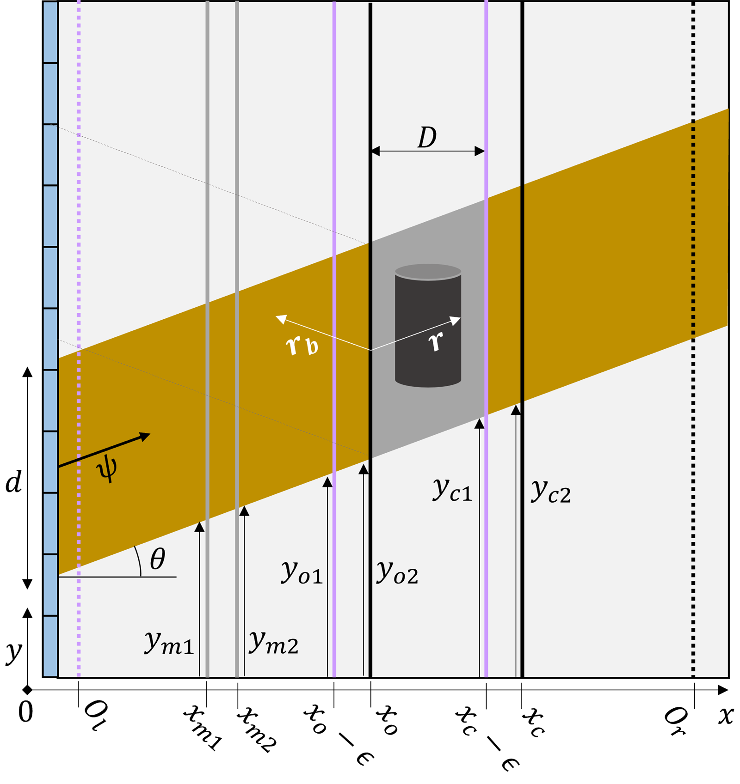
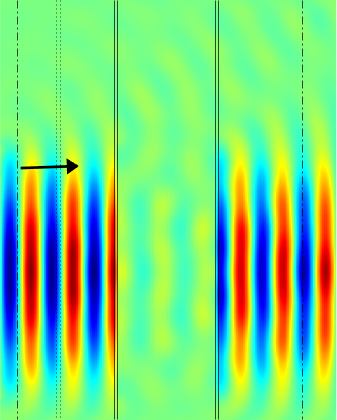
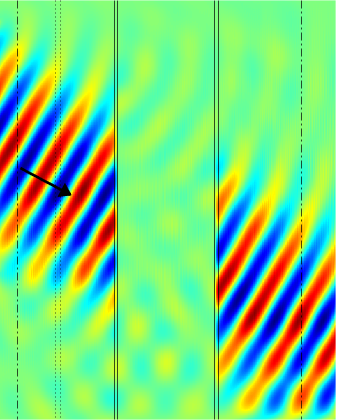
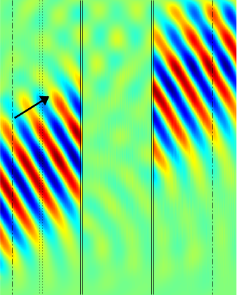
We consider the problem of hiding non-stationary objects from acoustic detection in a two-dimensional environment, where both the object's impedance and the properties of the detection signal may vary during operation. The detection signal is assumed to be an acoustic beam created by an array of emitters, which scans the area at different angles and different frequencies. We propose an active control-based solution that creates an effective moving dead zone around the object, and results in an artificial quiet channel for the object to pass through undetected. The control principle is based on mid-domain generation of near uni-directional beams using only monopole actuators. Based on real-time response prediction, these beams open and close the dead zone with a minimal perturbation backwards, which is crucial due to detector observers being located on both sides of the object's route. The back action wave determines the cloak efficiency, and is traded-off with the control effort; the higher is the effort the quieter is the cloaking channel. We validate our control algorithm via numerical experiments in a two-dimensional acoustic waveguide, testing variation in frequency and incidence angle of the detection source. Our cloak successfully intercepts the source by steering the control beams and adjusting their wavelength accordingly. Read more
Temporal negative refraction
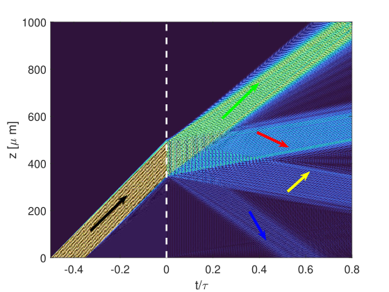
Negative refraction is a peculiar wave propagation phenomenon that occurs when a wave crosses a boundary between a regular medium and a medium with both constitutive parameters negative at the given frequency. The phase and group velocities of the transmitted wave then turn anti-parallel. Here we propose a temporal analogue of the negative refraction phenomenon using time-dependent media. Instead of transmitting the wave through a spatial boundary we transmit it through an artificial temporal boundary, created by switching both parameters from constant to dispersive with frequency.
We show that the resulting dynamics is sharply different from the spatial case, featuring both reflection and refraction in positive and negative regimes simultaneously. We demonstrate our results analytically and numerically using electromagnetic medium. In addition, we show that by a targeted dispersion tuning the temporal boundary can be made nonreflecting, while preserving both positive and negative refraction. Read more
Acoustic analogue of quantum tunneling
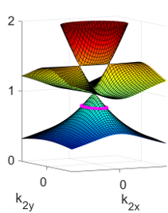
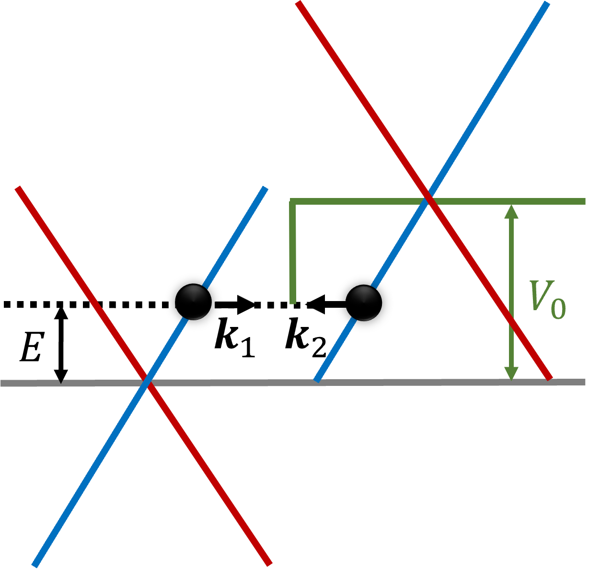
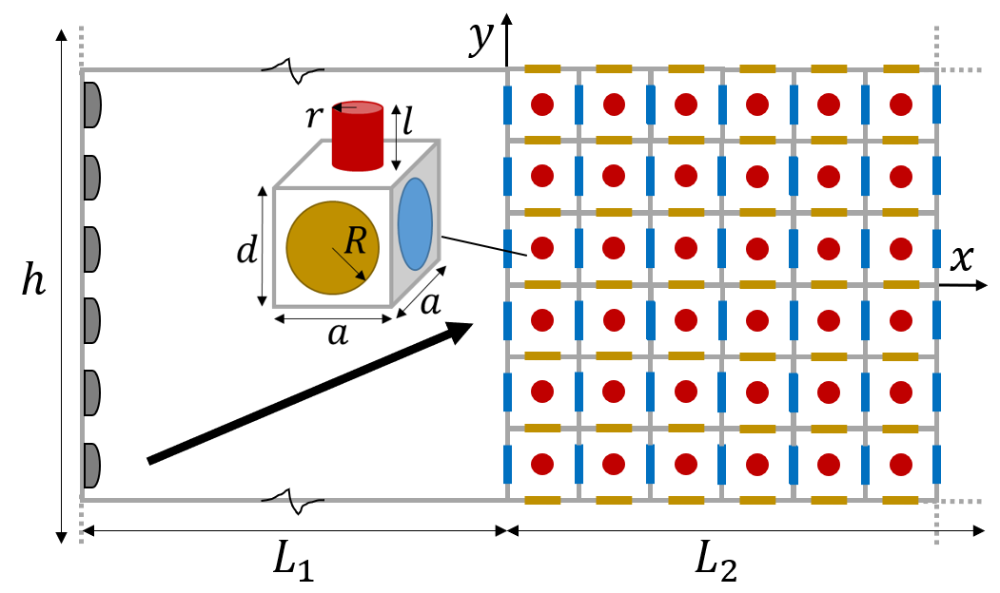
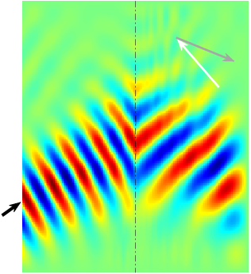
Klein tunneling is a counterintuitive quantum-mechanical phenomenon, predicting perfect transmission of relativistic particles through higher energy barriers. This phenomenon was shown to be supported at normal incidence in graphene due to pseudospin conservation. We show that Klein tunneling analogue can occur in classical systems, and remarkably, not relying on mimicking graphene's spinor wavefunction structure. Instead, the mechanism requires a particular form of constitutive parameters of the penetrated medium, yielding transmission properties identical to the quantum tunneling in graphene. We demonstrate this result by simulating tunneling of sound in a two-dimensional acoustic metamaterial. More strikingly, we show that by introducing a certain form of anisotropy, the tunneling can be made unimpeded for any incidence angle, while keeping most of its original Klein dispersion properties. This phenomenon may be denoted by the omnidirectional Klein-like tunneling. The new tunneling mechanism and its omnidirectional variant may be useful for applications requiring lossless and direction-independent transmission of classical waves. Read more
Feedback-based topological mechanical metamaterials
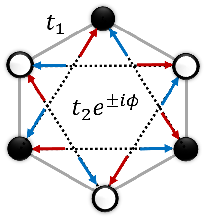
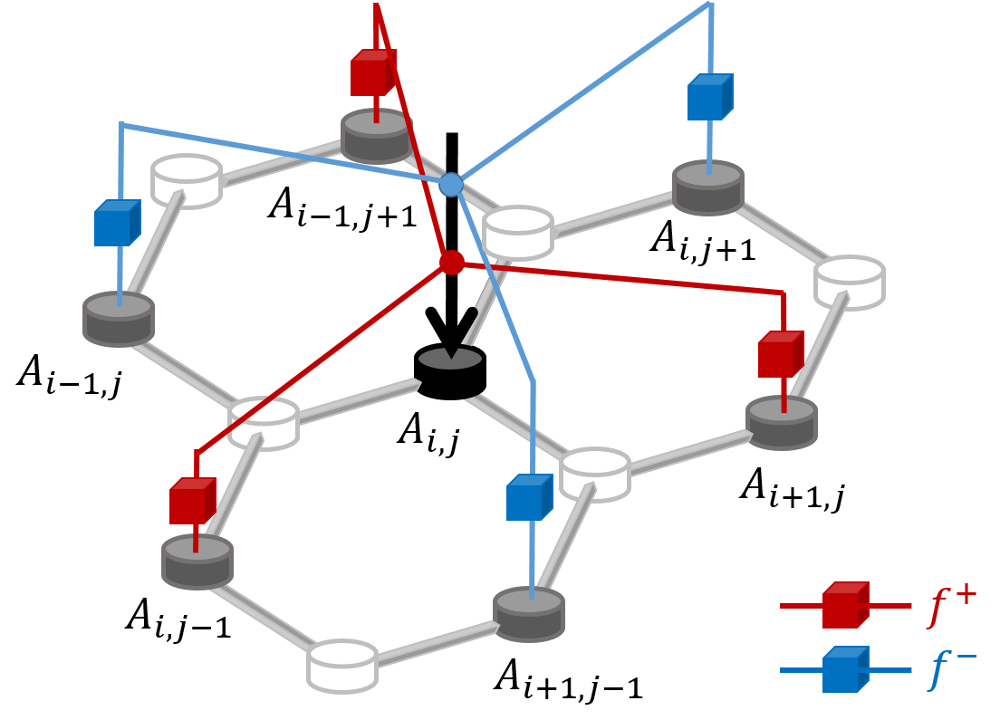
We introduced a method to design topological mechanical metamaterials that are not constrained by Newtonian dynamics. The unit cells in a mechanical lattice are subjected to active feedback forces that are processed through autonomous controllers, pre-programmed to generate the desired local response in real-time. As an example, we focused on the quantum Haldane model, a two-band topological system supporting the anomalous quantum Hall effect. This model breaks time-reversal symmetry via nonreciprocal coupling terms, the implementation of which in mechanical systems required violating Newton’s third law. We demonstrated that the required topological phase, characterized by chiral edge modes, can be achieved in an analogous mechanical system only with closed-loop control. We demonstrated that the resulting system has all the properties of the quantum model, supporting unidirectional, topologically-protected wave propagation along the metamaterial edges. Read more
Real-time steering of curved sound beams in a feedback-based topological acoustic metamaterial
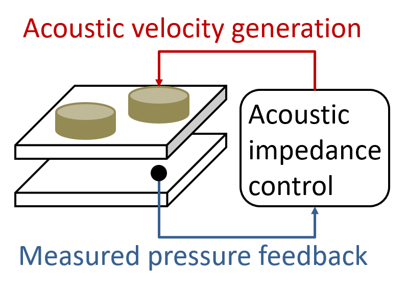
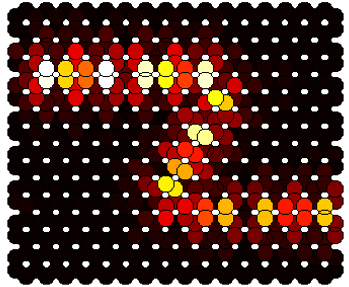
We realized active autonomous guiding of topological sound beams along arbitrary curved paths in free two-dimensional space. Acoustic transducers, embedded in a slab waveguide, generated desired dispersion profiles in closed-loop by processing real-time pressure field measurements through pre-programmed controllers. We mimicked the quantum valley Hall effect by actively creating an alternating acoustic impedance pattern across the waveguide. The pattern was traversed by artificial reconfigurable trajectories of different shapes. By topological protection, sound waves between the plates remained localized on the trajectories. Read more
Feedback-based reconfigurable elastic metamaterials
We converted a beam in axial vibration into a tunable and reconfigurable metamaterial using feedback control. Our control algorithm was capable to achieve different regimes of effective dynamic stiffness K and mass M for the same operating frequency, including zero stiffness and negative mass for wave propagation suppression, double negative parameters for backward wave propagation, and double zero parameters for total impedance matching. These properties could be activated, deactivated, or tuned in real-time, given that the design did not require any passive periodic feature embedded in the host structure, unlike traditional metamaterial designs. We considered an external actuation approach, by bonding actuators to an initially homogeneous beam. Read more
Active boundary and interior wave absorbers
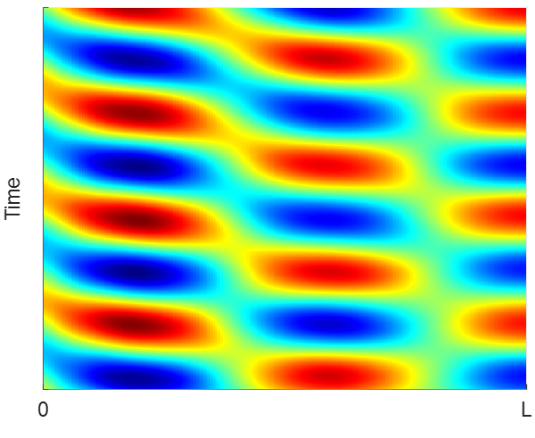
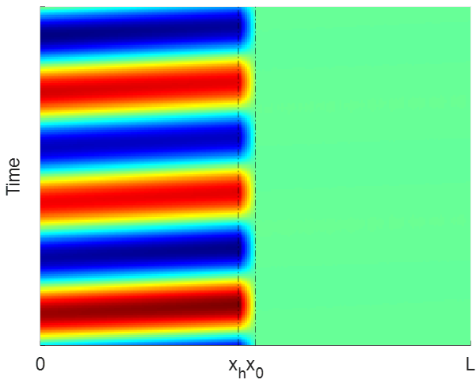
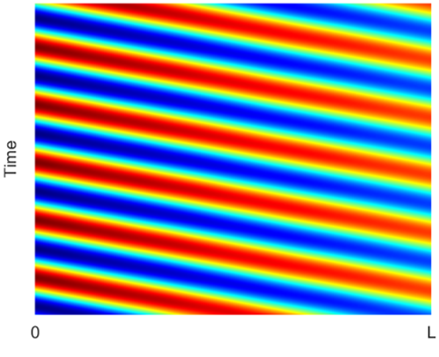
We designed active absorbers for wave propagation in a class of mechanical transmission-line metamaterials. The first absorber achieves a complete elimination of wave reflections from the metamaterial boundaries independently of the frequency regime. The associated controller was implemented in a feedback loop. The second absorber blocks wave propagation beyond a prescribed location at the metamaterial interior with minimized back-scattering, thus generating a sink without any physical boundary present. It was implemented in a feed-forward loop via a unique near uni-directional control wave method, using two concentrated actuators. Both the interior and boundary absorbers were based on an exact fractional order transfer function model that we derived for the metamaterial. The model explicitly exhibits essential wave characteristics, including delays, dispersion, impedance, boundary reflections etc. The resulting controllers were of fractional order as well, and were realized via a dedicated approximation technique. Read more